An Exploration of Neural Network Expressivity and Approximation
Dynamics
Width
d = 32
Approximation Progression
Loss Progression
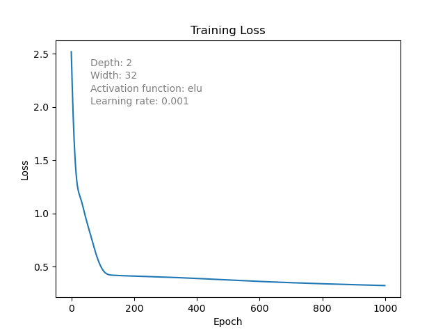
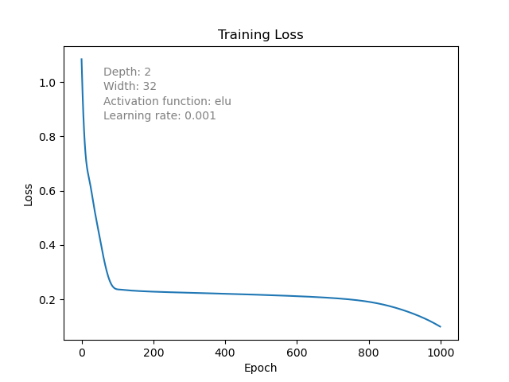
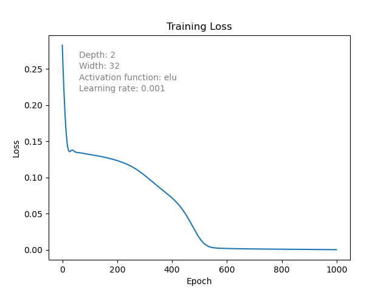
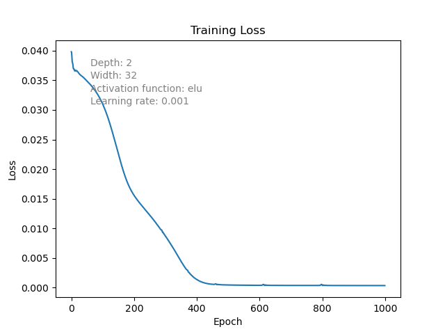
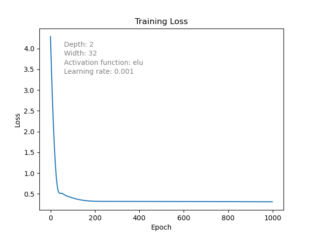
d = 64
Approximation Progression
Loss Progression
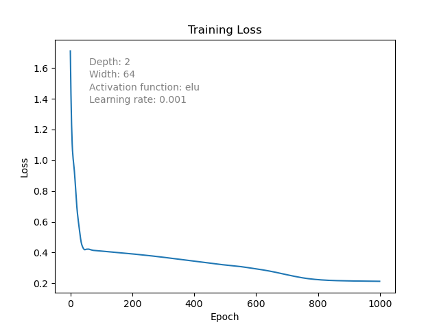
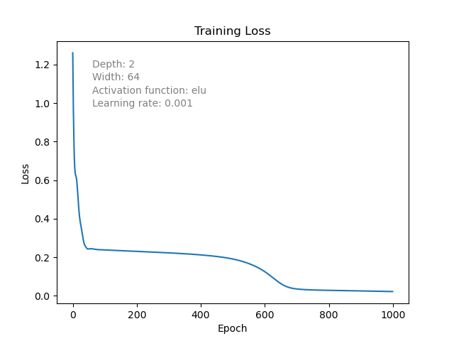
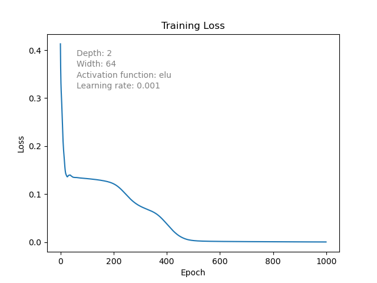
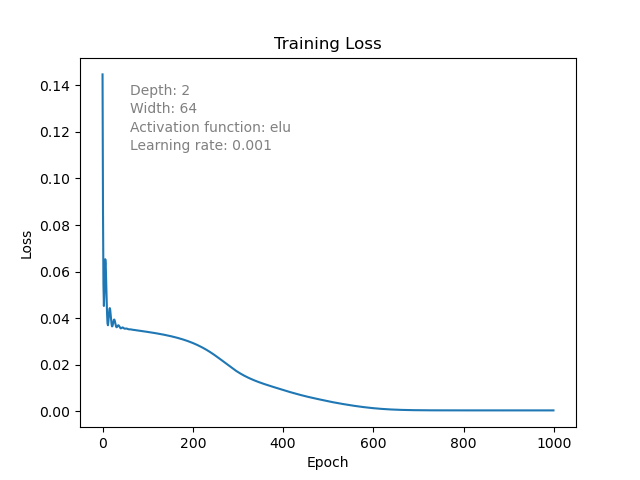
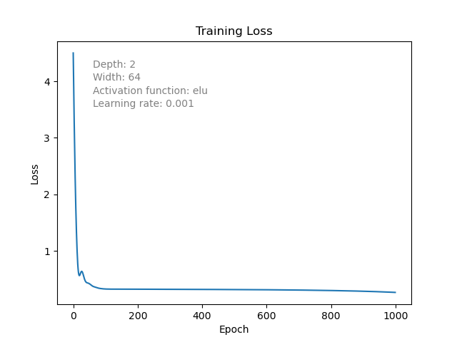
d = 128
Approximation Progression
Loss Progression
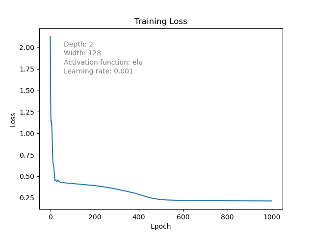
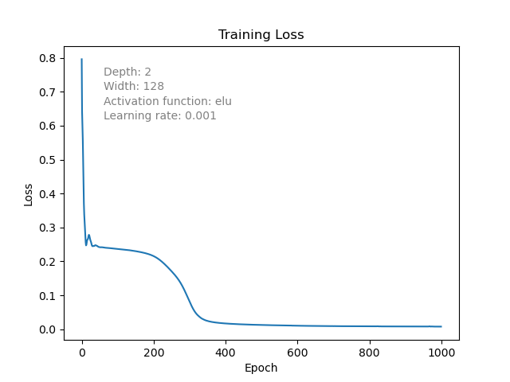
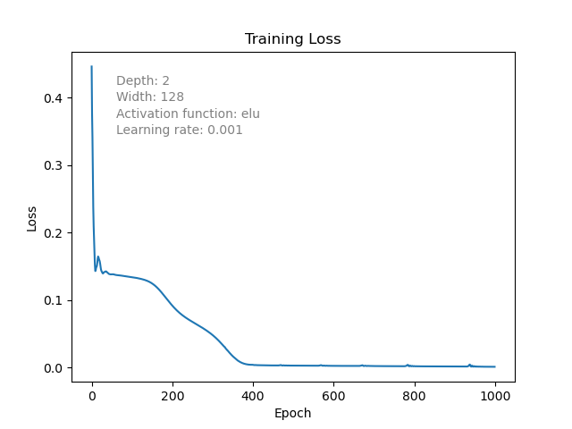
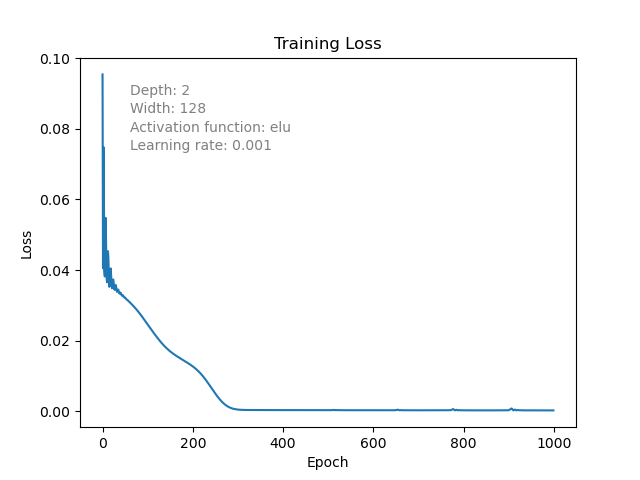
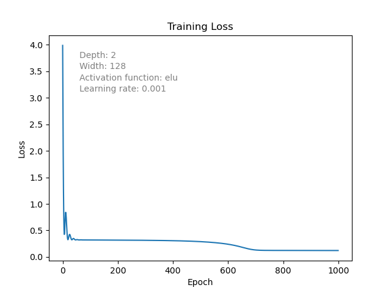
d = 32 vs d = 128
Approximation Progression
Loss Progression